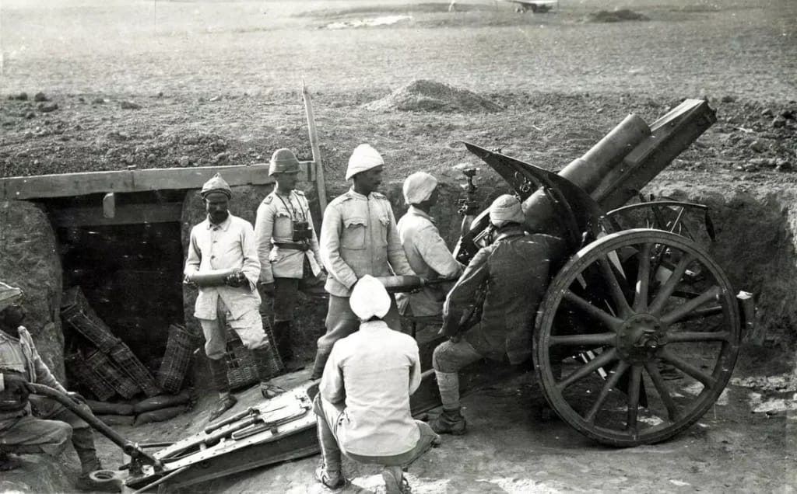
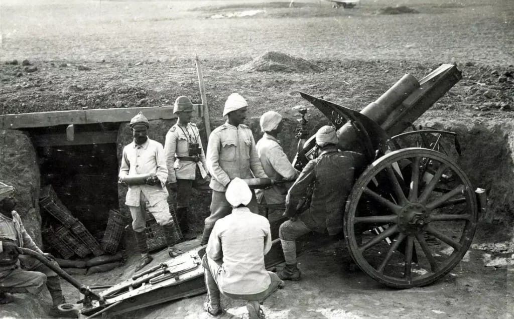
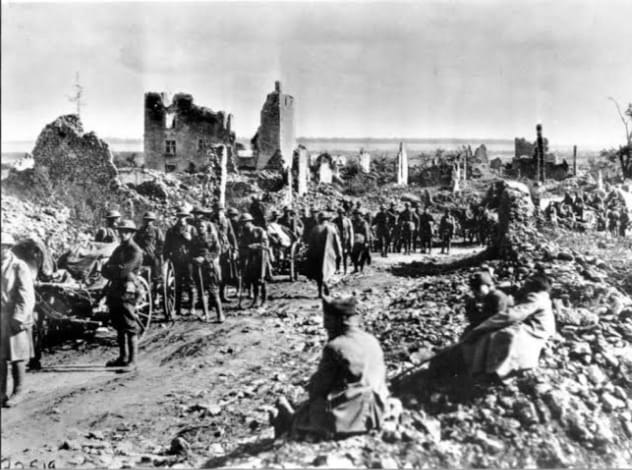
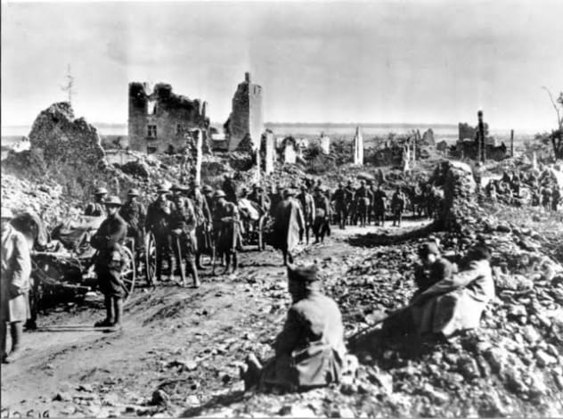

 


A Primeira Guerra Mundial
Primeira Guerra Mundial (1914-1918)
Causas da Guerra:
A Primeira Guerra Mundial foi causada por uma série de tensões acumuladas entre as grandes potências da Europa. As principais causas foram:
- Nacionalismo: Cada nação queria se afirmar como potência, e havia movimentos separatistas dentro de impérios multiculturais. A Sérvia, por exemplo, queria unir todos os povos eslavos do sul da Europa.
- Imperialismo: As potências europeias competiam por colônias e influência, especialmente na África e na Ásia, o que aumentava as rivalidades.
- Militarismo: Houve uma corrida armamentista, com nações investindo pesado em tecnologia bélica. Alemanha e Reino Unido, por exemplo, disputavam quem teria a marinha mais poderosa.
- Alianças militares: Para se proteger, os países formaram blocos:
- Tríplice Entente: França, Reino Unido e Rússia.
- Tríplice Aliança: Alemanha, Áustria-Hungria e Itália (que depois muda de lado em 1915).
Esses fatores criaram um ambiente de tensão constante, que transformou um conflito regional em uma guerra mundial.
Estopim da Guerra:
O estopim da guerra foi o assassinato do arquiduque Francisco Ferdinando, herdeiro do Império Austro-Húngaro, em 28 de junho de 1914, em Sarajevo. Ele foi morto por Gavrilo Princip, um jovem nacionalista sérvio-bósnio membro do grupo Mão Negra, que buscava a independência dos povos eslavos sob domínio austro-húngaro.
Francisco Ferdinando era sobrinho do imperador Francisco José I e defendia reformas internas no império, incluindo dar mais autonomia aos povos eslavos. Isso incomodava radicais nacionalistas, tanto dentro quanto fora do império, especialmente na Sérvia.
O assassinato ocorreu em meio a um cenário tenso nos Bálcãs: a Sérvia desejava liderar uma união de povos eslavos, enquanto o Império Austro-Húngaro queria controlar a região e conter movimentos separatistas. A Rússia, por sua vez, apoiava a Sérvia como "protetora dos eslavos".
Após o assassinato, a Áustria-Hungria acusou a Sérvia de envolvimento e, com apoio da Alemanha, emitiu um ultimato. A Sérvia aceitou quase todas as exigências, exceto permitir que investigadores austríacos atuassem em seu território. Com isso, a Áustria declarou guerra à Sérvia em 28 de julho de 1914.
O sistema de alianças foi ativado em sequência:
- A Rússia mobilizou tropas para defender a Sérvia.
- A Alemanha declarou guerra à Rússia e à França.
- A Alemanha invadiu a Bélgica para atacar a França, o que levou o Reino Unido a entrar na guerra.
A Guerra nas Frentes:
Frente Ocidental (França e Bélgica)
A Alemanha tentou invadir a França pelo norte, aplicando o Plano Schlieffen. No entanto, o avanço alemão foi contido e se instalou uma guerra de trincheiras, marcada por batalhas longas, pouca movimentação territorial e grandes perdas humanas. Exemplos: Batalhas de Somme e Verdun.
Frente Oriental (Alemanha e Áustria-Hungria contra a Rússia)
Foi marcada por mais mobilidade. A Rússia sofreu derrotas pesadas e, após a Revolução Russa de 1917, saiu da guerra em 1918 com o Tratado de Brest-Litovski, firmado com a Alemanha.
Outras Frentes:
No Oriente Médio, o Império Otomano entrou ao lado da Alemanha.
Na África e Ásia, as potências coloniais lutaram por territórios.
Nos Bálcãs, Sérvia, Grécia e outros países também estiveram envolvidos em intensos combates.
Entrada dos EUA (1917):
A entrada dos Estados Unidos na guerra foi decisiva. Entre os principais motivos estavam:
- O uso de submarinos alemães para afundar navios civis, como o Lusitania, que levava cidadãos americanos.
- O Telegrama Zimmermann, em que a Alemanha tentou convencer o México a atacar os Estados Unidos, prometendo apoio militar em troca de territórios perdidos.
Com os EUA ao lado da Tríplice Entente, o equilíbrio da guerra mudou.
Fim da Guerra:
A Alemanha, enfraquecida por bloqueios econômicos, falta de alimentos, revoltas internas e a entrada dos EUA no conflito, não conseguiu sustentar a guerra. Em 11 de novembro de 1918, a Alemanha assinou o armistício, encerrando os combates.
Tratado de Versalhes (1919):
O Tratado de Versalhes impôs duras punições à Alemanha:
- Assumiu a culpa pela guerra.
- Teve que pagar indenizações pesadas.
- Perdeu territórios e colônias.
- Foi obrigada a reduzir drasticamente seu exército.
Essas medidas geraram grande insatisfação entre os alemães e contribuíram para a ascensão do nazismo e a eclosão da Segunda Guerra Mundial.
Consequências da Primeira Guerra Mundial:
- Mais de 10 milhões de mortos.
- Queda de grandes impérios: Austro-Húngaro, Otomano, Russo e Alemão.
- Criação de novos países, como Polônia, Iugoslávia e Tchecoslováquia.
- Instabilidade política e econômica na Europa.
- Ascensão de regimes autoritários, como o fascismo e o nazismo.
- Criação da Liga das Nações para evitar novas guerras, embora tenha sido ineficaz.
Armas da Primeira Grande Guerra
As Guerras Mundiais revolucionaram o armamento bélico. A Primeira Guerra introduziu tanques, aviação, metralhadoras pesadas e armas químicas.
Alemanha
- Rifles Gewehr 98, MG08, gás mostarda, avião Fokker Dr.I, tanque A7V.
Reino Unido
- Lee-Enfield, tanques Mark I, Sopwith Camel.
Estados Unidos
- Springfield M1903, metralhadoras Browning, Curtiss JN-4.
União Soviética
- Mosin-Nagant, aviação limitada.
Japão (WW2)
- Zero (avião), fuzis Arisaka, tanques leves Type 95, encouraçado Yamato.
França
- Lebel M1886, tanque Renault FT.
Itália
- Carcano M91, artilharia Ansaldo.
Outros
Império Otomano: Gewehr 88, canhões Krupp. Áustria-Hungria: Steyr-Mannlicher, obuses Skoda. Brasil: Fuzis Springfield, metralhadoras Browning, combate na Itália com a FEB.
Armas Químicas
Amplamente usadas na Primeira Guerra (cloro, fosgênio, gás mostarda). Proibidas pelos Tratados de Genebra (1925); temidas, mas pouco utilizadas na Segunda.
Guerra Naval e Tecnologia
Submarinos U-Boat e Batalha da Jutlândia.
Principais Batalhas da WW1
Batalha de Tannenberg
Conflito ocorrido de 26 a 30 de agosto de 1914, na Prússia Oriental (atual Polônia), entre o Império Alemão e o Império Russo. Resultou em uma vitória alemã.
- Data: 26 a 30 de agosto de 1914
- Local: Prússia Oriental
- Participantes: Império Alemão vs. Império Russo
- Resultado: Vitória alemã
- Baixas: Alemanha: ~13.000 | Rússia: 30.000+, 92.000 prisioneiros
Batalhas de Marne
Primeira Batalha de Marne (1914)
- Data: 6 a 12 de setembro de 1914
- Local: Rio Marne, França
- Participantes: França e Reino Unido vs. Alemanha
- Resultado: Vitória franco-britânica
- Baixas: França: 250.000 | Reino Unido: 12.733 | Alemanha: 250.000
Segunda Batalha de Marne (1918)
- Data: 15 de julho a 5 de agosto de 1918
- Local: Rio Marne, França
- Participantes: França, Reino Unido, EUA vs. Alemanha
- Resultado: Vitória aliado
- Baixas: Alemanha: 168.000 | Aliados: 95.000
Batalha de Somme
Conflito sangrento ocorrido entre julho e novembro de 1916, na França, que resultou em mais de um milhão de mortos e feridos.
- Data: 1 de julho a 18 de novembro de 1916
- Local: Somme, França
- Participantes: Reino Unido e França vs. Alemanha
- Resultado: Estabilização da frente ocidental (impasse)
- Baixas: Mais de 1 milhão entre mortos e feridos
Batalha de Passchendaele
Também conhecida como Terceira Batalha de Ypres, foi um conflito travado entre julho e novembro de 1917, na Bélgica, marcado por condições de lama extrema, grande número de baixas e pouca conquista territorial.
- Data: 31 de julho a 10 de novembro de 1917
- Local: Passchendaele, Bélgica
- Participantes: Reino Unido, Canadá, Austrália, Nova Zelândia vs. Alemanha
- Resultado: Vitória tática dos Aliados (avanço de poucos quilômetros)
- Baixas: Aliados: ~275.000 | Alemanha: ~220.000


A Segunda Guerra Mundial
Segunda Guerra Mundial (1939–1945)
Causas da Guerra:
A Segunda Guerra Mundial foi causada por um conjunto de fatores: o revanchismo alemão após o Tratado de Versalhes, a ascensão de regimes totalitários (nazismo, fascismo, militarismo japonês), a crise econômica de 1929, o expansionismo territorial do Eixo e a falha das potências ocidentais em conter as agressões iniciais.
- Nacionalismo extremo: Propagandas de superioridade racial e nacional, especialmente na Alemanha e no Japão.
- Imperialismo e revisionismo: Alemanha, Itália e Japão buscavam anexar territórios para expandir seus impérios.
- Militarismo: Rearmamento em massa, novas doutrinas de blitzkrieg e guerra aérea estratégica.
- Alianças militares:
- Potências do Eixo: Alemanha, Itália, Japão.
- Aliados: Reino Unido, França, União Soviética (a partir de 1941), Estados Unidos (a partir de 1941), China e outros.
Estopim da Guerra:
Em 1º de setembro de 1939, a Alemanha invadiu a Polônia com forças de tanques, aviação e artilharia em um ataque relâmpago. Dois dias depois, França e Reino Unido declararam guerra à Alemanha.
- Data: 1 de setembro de 1939
- Invasores: Alemanha nazista (com apoio soviético a partir de 17/09/1939)
- Resultado: Ocupação da Polônia e início formal da Segunda Guerra Mundial
A Guerra nas Frentes:
Frente Ocidental
Vai da Batalha da França (maio–junho/1940) à invasão da Normandia (Dia D – junho/1944) e ofensiva final sobre a Alemanha (1945).
Frente Oriental
Iniciada pela Operação Barbarossa (22/06/1941), incluiu Stalingrado (1942–43), Kursk (1943) e o cerco a Berlim (abril–maio/1945).
Frente Tecnológica
Com a grande crescente tecnológica tivemos novos mecanismos e meios para comunicação, aniquilação e produção. Um dos exemplos mais conhecidos é a Enigma, uma máquina de criptografia mecânica nazista, feita para comunicação entre comando e front nazista.
A máquina só foi descriptografada por Alan Turing, companhia, e sua grande criação com o nome absolutamente criativo, chamada de Máquina de Turing, a base para tudo tecnológico que temos hoje. Vencida pelos aliados em 1941.
Outras Frentes:
Teatro do Mediterrâneo e Norte da África: De El Alamein (1942) à rendição do Eixo na Tunísia (maio/1943). Pacífico: Ataque a Pearl Harbor (7/12/1941), Midway (1942), Iwo Jima (1945) e Hiroshima/Nagasaki (agosto/1945).
Entrada dos EUA:
O ataque a Pearl Harbor em 7 de dezembro de 1941 levou os Estados Unidos a declararem guerra ao Japão e, logo depois, à Alemanha e Itália.
- Mortos em Pearl Harbor: ~2.400
- Feridos: ~1.200
Fim da Guerra:
Na Europa, a Alemanha rendeu-se em 8 de maio de 1945 (V-E Day). No Pacífico, o Japão rendendeu-se em 2 de setembro de 1945, após os bombardeios de Hiroshima (6/08) e Nagasaki (9/08).
Consequências da Segunda Guerra Mundial:
- Divisão da Europa em blocos capitalista e socialista; início da Guerra Fria.
- Criação da ONU (1945) e instituições financeiras globais (FMI, Banco Mundial).
- Divisão da Alemanha e ocupação do Japão pelos EUA.
- Julghmentos de Nuremberg e responsabilização por crimes de guerra.
- Reconstrução econômica via Plano Marshall e rápido crescimento de Alemanha Ocidental e Japão.
- Enfraquecimento das potências coloniais (Reino Unido, França, Holanda, Bélgica) após a guerra, com perda de recursos e prestígio.
- Ascensão dos EUA e da URSS, ambos contrários à manutenção de impérios coloniais, cada um por razões ideológicas distintas.
- Apoio da ONU à autodeterminação dos povos, com resolução favorável à independência das colônias (Carta das Nações Unidas, 1945).
- Movimentos nacionalistas e de libertação ganham força na Ásia, África e Caribe, frequentemente liderados por elites locais formadas nas metrópoles.
- Descolonização acelerada na Ásia, com independência da Índia e Paquistão (1947), Indonésia (1949), Vietnã (1954), entre outros.
- Processo mais lento e conflituoso na África, com guerras de independência (Argélia, Angola, Moçambique) e casos pacíficos (Gana, Senegal).
- Guerras e transições impulsionadas pela Guerra Fria, com potências apoiando lados opostos (ex.: Angola, Vietnã, Coreia).
- Criação de novos Estados independentes, mas com desafios políticos e econômicos herdados do colonialismo.
- Neocolonialismo: independência formal, mas manutenção da dependência econômica e militar das ex-colônias em relação às metrópoles ou superpotências.
- Conferência de Bandung (1955): marco simbólico da união dos países recém-independentes e do chamado “Terceiro Mundo”.
Armas da Segunda Grande Guerra
As inovações da Primeira Guerra foram ampliadas: tanques mais rápidos, aviões de superioridade aérea, submarinos de ataque e as primeiras armas nucleares.
Alemanha
- Kar98k, MP40, MG34/MG42; Panzer III–VI; Stuka, Bf 109; V-1 e V-2.
Reino Unido
- Lee-Enfield No.4, Sten; Churchill, Cromwell; Spitfire, Lancaster; radar Chain Home.
Estados Unidos
- M1 Garand, Thompson; M4 Sherman; P-51 Mustang, B-17/B-29; submarinos classe Gato; Little Boy, Fat Man.
União Soviética
- Mosin-Nagant, PPSh-41; T-34, KV-1, IS-2; Il-2 Sturmovik; Katyusha.
Japão
- Arisaka Type 38/99; Type 100 SMG; Type 95 Ha-Go; Zero; Yamato.
Outros
França: MAS-36, Char B1, D.520. Itália: Carcano M38, Beretta M38, M13/40. Brasil (FEB): Springfield, Browning, combate na Itália.
Armas Químicas
Proibidas pelo Protocolo de Genebra (1925); não usadas em larga escala.
Guerra Naval e Tecnologia
Submarinos U-Boat, porta-aviões de escolta, radar, sonar e criptografia (Enigma/Ultra).
Principais Conflitos da WW2
Invasão da Polônia (1939)
O estopim da Segunda Guerra Mundial. A Alemanha nazista invadiu a Polônia em 1º de setembro de 1939, levando França e Reino Unido a declararem guerra ao Terceiro Reich.
- Data: 1 de setembro de 1939
- Invasores: Alemanha nazista e União Soviética
- Forças alemãs: 1,5 M soldados, 2.750 tanques, 2.315 aeronaves
- Resultado: Ocupação e início da guerra
Batalha da França (1940)
Conflito relâmpago em que a Alemanha derrotou rapidamente as forças francesas e britânicas, ocupando Paris e dividindo a França entre ocupação direta e o regime de Vichy.
- Data: Maio–Junho de 1940
- Resultado: Rendição francesa e evacuação de Dunkerque
- Prisioneiros: ~1,9 M
Stalingrado (1942–43)
Marcou a virada da guerra no Leste Europeu. As forças soviéticas cercaram e derrotaram os alemães, iniciando o recuo nazista. Foi uma das batalhas mais sangrentas da história.
- Período: Jul 1942–Fev 1943
- Mortes: ~2 M (civis e militares)
- Resultado: Virada estratégica para os soviéticos
Campanha do Norte da África (1940–43)
Série de batalhas entre as forças do Eixo e os Aliados pelo controle estratégico do norte da África, especialmente Egito e Líbia. Terminou com a vitória Aliada.
- Rendição do Eixo: Maio de 1943
- Prisioneiros capturados: ~275 000
Batalha de Berlim (Abr–Mai 1945)
Última grande ofensiva europeia. O Exército Vermelho cercou e conquistou Berlim, resultando na rendição da Alemanha nazista e no fim da guerra na Europa.
- Data: 16 Abr – 2 Mai 1945
- Perdas soviéticas: >78 000 mortos
- Perdas alemãs: >90 000 mortos
Guerra do Pacífico (1941–45)
Conflito entre o Japão e os Aliados, principalmente os EUA. Incluiu batalhas como Midway, Iwo Jima e Okinawa. Terminou com as bombas atômicas em Hiroshima e Nagasaki.
- Pearl Harbor: 7 Dez 1941; ~2 400 mortos, 1 178 feridos
- Midway: Jun 1942; virada naval
- Hiroshima/Nagasaki: Ago 1945; uso de armas atômicas